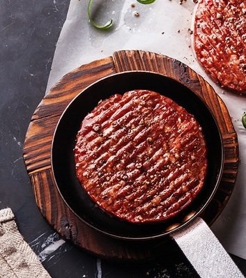
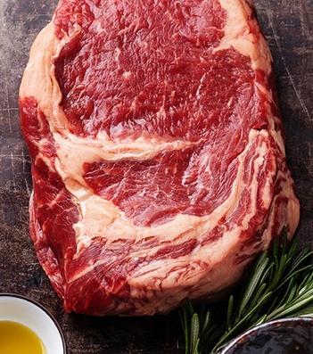

Лучший СтейкХауз Москвы
Правильный отруб, огонь и мастерство - вот рецепт идеального стейка!
О ресторане
Steak House открылся 10 сентября 2007 года в самом центре Москвы. Использование в оформлении интерьеров натуральных материалов – дерева, кожи – придают стейк хаусу атмосферу теплоты и гостеприимства. Для самых маленьких гостей в ресторане оборудована детская комната со всевозможными игрушками, книгами, раскрасками и настольными играми.


Рибай
Максимальная мраморность и сочность в лучшем стейке рибай. 180 дней зернового откорма.
Этот Рибай Прайм отличает 180-ти дневный зерновой откорм, который делает мясо слаще, ароматнее и обеспечивает высшую мраморность USDA Prime и сочный вкус.
1100р
Чак-ролл
Чак ролл напоминает рибай, но более нежный и ароматный. А богатый и насыщенный вкус вкупе с хорошим балансом мяса и нежного жирка делают его прекрасным кандидатом на отличный стейк на гриле в классической подаче из чесночного масла и специй!
950р
Филе-миньон
Наш стейк филе-миньон – это зачищенный кусок нежнейшей вырезки зернового откорма. Филе-миньон нарезается из самой ценной части говядины – тендерлоина (вырезки), почти не содержит жира, обладает тонким ароматом, а легкость, с которой он жуется, буквально тая во рту, сделала его самым роскошным и известным стейком во всем мире.
1800р
Ти-бон стейк
Удивительный королевских размеров стейк
Ти-Бон получил свое название благодаря небольшой косточке, которая разделяет два вида мяса, так удачно сочетающихся в одном блюде. Стриплойн и изысканное мясо средней части вырезки вместе составляют поразительный ансамбль, способный впечатлить самого избирательного гурмана.
2400р
3000
Стейков было подано в нашем стейк-хаузе за последние пять лет, что мы радовали своих гостей
32
Опытнейших сотрудника предоставят вам высокое качество блюд и отличный уровень сервиса
12
Видов стейков предоставляет наше меню - даже самый искушенный останется доволен!
Контакты SteakHouse
Попробуйте настоящее мясо в лучшем стейк-хаузе Москвы!